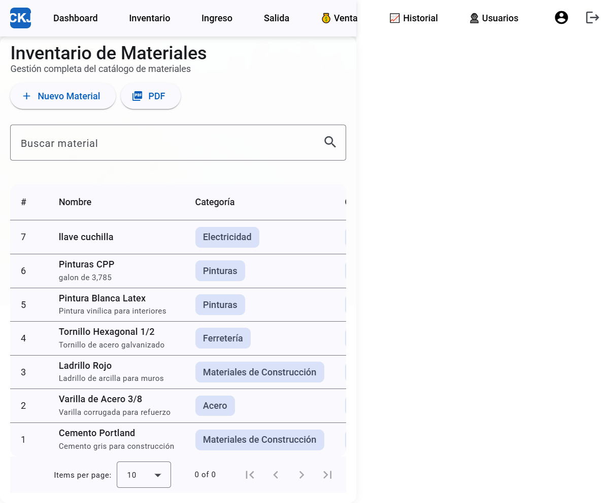
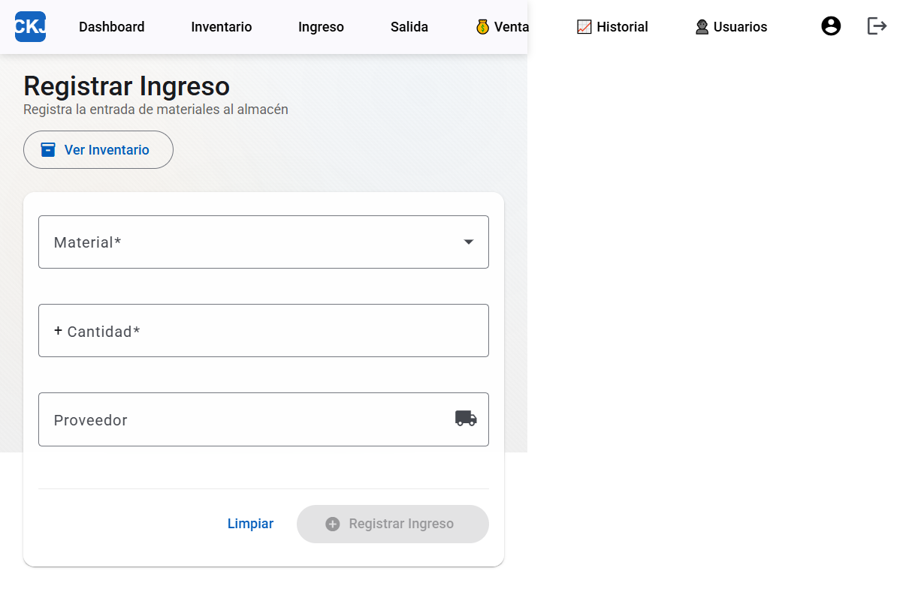
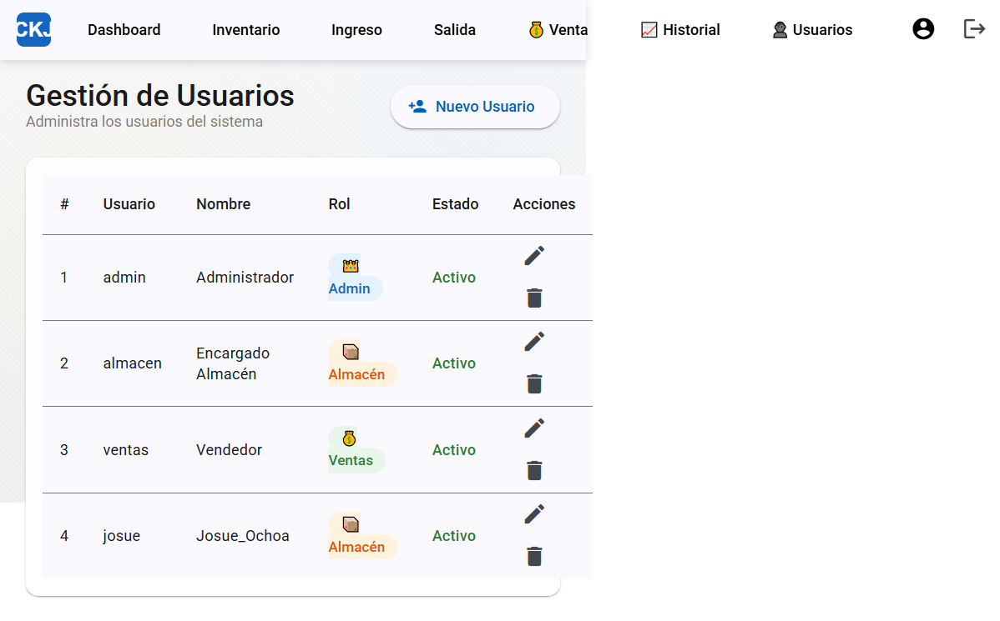

1. Introducción
CKJ - Sistema de Almacén es una aplicación web para la gestión completa de inventarios, diseñada para pequeñas y medianas empresas. Permite controlar entradas y salidas de materiales, generar reportes, administrar usuarios y realizar ventas.
Tecnología
| Componente | Tecnología |
|---|---|
| Frontend | Angular (SPA moderna) |
| Backend | Node.js + Express |
| Base de Datos | SQLite |
Requisitos del Sistema
Para el usuario (navegador web)
- Google Chrome 90+, Firefox 90+, Edge 90+ o Safari 14+
- Resolución mínima: 1024 × 768 px
- Conexión a internet o red local
Para el administrador del sistema
- Node.js 22.x instalado
- npm (incluido con Node.js)
- Acceso al servidor donde corre la aplicación
2. Acceso al Sistema

Al ingresar a la aplicación, verás la pantalla de inicio de sesión con el logo y los campos para ingresar tus credenciales.
Datos de acceso predefinidos
| Usuario | Contraseña | Rol |
|---|---|---|
admin | admin123 | 👑 Admin |
almacen | almacen123 | 📦 Almacén |
ventas | ventas123 | 💰 Ventas |
Pasos para iniciar sesión
3. Dashboard

El Dashboard es la pantalla principal después de iniciar sesión. Muestra un resumen del estado actual del almacén.
Indicadores principales
| Indicador | Descripción |
|---|---|
| 📦 Materiales | Total de materiales registrados |
| 📊 Total en Stock | Suma de todas las cantidades en inventario |
| 💰 Valor Total | Suma del valor monetario del inventario |
| ⚠️ Stock Bajo | Materiales por debajo del stock mínimo |
| 📥 Ingresos Hoy | Ingresos registrados el día de hoy |
| 📤 Salidas Hoy | Salidas registradas el día de hoy |
Secciones del Dashboard
Movimientos Recientes
Muestra una tabla con los últimos 5 movimientos realizados, incluyendo material, tipo (Ingreso/Salida), cantidad, fecha y origen/destino.
Materiales con Stock Bajo
Lista los materiales cuya cantidad actual está por debajo del stock mínimo configurado. Desde aquí puedes hacer clic en "Ir al Inventario" para gestionarlos.
4. Gestión de Inventario

Lista de Materiales
La sección Inventario muestra todos los materiales registrados en una tabla con las siguientes columnas:
| Columna | Descripción |
|---|---|
| Nombre | Nombre del material |
| Categoría | Clasificación del material |
| Cantidad | Stock actual |
| Unidad | Unidad de medida (bolsas, unidades, galones, etc.) |
| Ubicación | Ubicación física en el almacén |
| Precio Unitario | Precio por unidad |
| Stock Mínimo | Cantidad mínima antes de alertar |
| Acciones | Botones para editar ✏️ o eliminar 🗑️ |
Acciones disponibles
🔍 Buscar material
Usa el campo de búsqueda para filtrar materiales por nombre o categoría.
➕ Agregar nuevo material
✏️ Editar material
🗑️ Eliminar material
5. Registrar Ingreso

Esta sección permite registrar la entrada de materiales al almacén, aumentando automáticamente el stock.
Pasos para registrar un ingreso
Botón "Ver Inventario"
Abre una ventana emergente con la lista completa de materiales y sus stocks actuales para consulta rápida mientras registras.
6. Registrar Salida

Esta sección permite registrar la salida de materiales del almacén, descontando automáticamente del stock.
Pasos para registrar una salida
Validaciones
- La cantidad debe ser mayor a 0
- No puede exceder el stock actual del material
- El material debe existir en el inventario
7. Punto de Venta

El módulo de ventas permite registrar ventas a clientes y generar boletas de venta.
Pasos para realizar una venta
Características
- Cálculo automático del total de la venta
- Descuento del stock automático al finalizar
- Generación de boleta/resumen de venta
8. Historial y Reportes

La sección de Historial permite consultar todos los movimientos registrados y generar reportes.
Filtros disponibles
| Filtro | Descripción |
|---|---|
| Período | Esta semana, Este mes, Todo |
| Tipo | Ingreso, Salida, Todos |
| Material | Filtrar por un material específico |
Resumen del período
La sección superior muestra estadísticas del período seleccionado:
- Total de movimientos
- Total de ingresos y salidas
- Cantidad ingresada y cantidad salida
- Valor total de ventas
Exportar a PDF
Tabla de movimientos
Lista detallada de cada movimiento con:
- Material y Tipo (verde = ingreso, rojo = salida)
- Cantidad, Fecha y hora
- Proveedor/Destino
- Usuario que registró
- Comprobante adjunto (si aplica)
9. Gestión de Usuarios

Lista de usuarios
Muestra todos los usuarios registrados en una tabla con:
- ID y Usuario (nombre de inicio de sesión)
- Nombre completo
- Rol (Admin 👑, Almacén 📦, Ventas 💰)
- Estado (Activo/Inactivo)
- Acciones (Editar ✏️ / Eliminar 🗑️)
Crear nuevo usuario
Editar usuario
Eliminar usuario
10. Roles y Permisos
| Función | Admin | Almacén | Ventas |
|---|---|---|---|
| Ver Dashboard | ✅ | ✅ | ✅ |
| Ver Inventario | ✅ | ✅ | ✅ |
| Crear/Editar Materiales | ✅ | ✅ | ❌ |
| Eliminar Materiales | ✅ | ❌ | ❌ |
| Registrar Ingreso | ✅ | ✅ | ❌ |
| Registrar Salida | ✅ | ✅ | ✅* |
| Realizar Ventas | ✅ | ❌ | ✅ |
| Ver Reportes | ✅ | ✅ | ✅ |
| Gestionar Usuarios | ✅ | ❌ | ❌ |
| Ajustar Stock | ✅ | ❌ | ❌ |
* Ventas solo puede registrar salidas, no ingresos.
11. Solución de Problemas
❌ No puedo iniciar sesión
- Verifica que el usuario y contraseña sean correctos
- Confirma que tu cuenta esté activa (contacta al admin)
- Revisa que el servidor esté funcionando
- Límite de 5 intentos por 15 minutos por seguridad
⚠️ Error "Stock insuficiente"
- El material no tiene suficiente cantidad para la salida solicitada
- Revisa el stock actual en el inventario
- Registra un ingreso si es necesario
🌐 La página no carga
- Verifica que el servidor esté corriendo
- Revisa la conexión de red
- Limpia la caché del navegador (Ctrl + Shift + Del)
- Prueba con otro navegador
📎 Error al adjuntar comprobante
- Formatos permitidos: PDF, JPG, PNG, GIF, WEBP
- Tamaño máximo: 5MB
- Verifica que el archivo no esté dañado